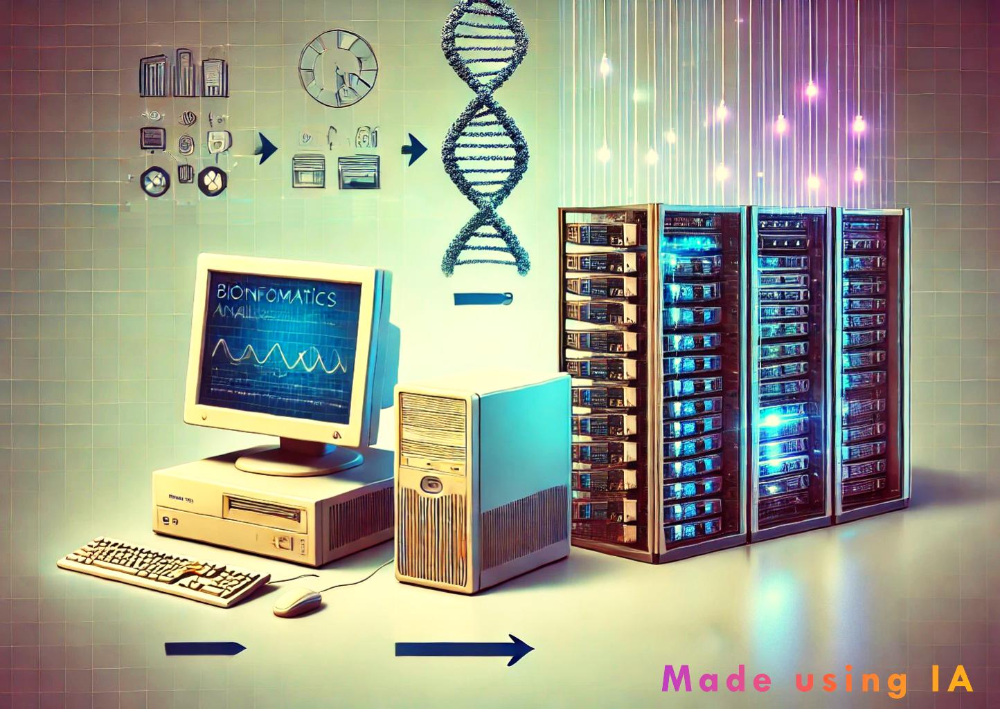
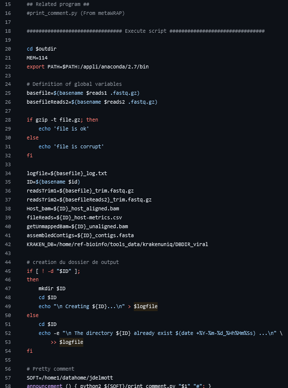

flowchart TD
A(Sample1) --> D{Aggregation}
B(Sample2) --> D
C(Sample3) --> D
D--> E[sample comparison]

Today, the volume of data to be analysed in bioinformatics is such that it’s essential to use a number of tools to produce results in a consistent timeframe. However, these advances are not always used, so let’s take a look back at the history of analysis methods over the last 10 years.
To fully understand what these modalities refer to, I need to introduce you to the notion that I call the different generations, often speaking of the generation I, II or III pipeline (abbreviated as GI, GII etc..). Of course, defined limits are not so clearly defined, and often generations of tools coexist within a lab or organization. I’ll now describe what I consider to be the different generations, and then conclude by explaining the advantages of such a category. If you’re a bioinformatician, you can go straight to the GII pipeline.
Generation I pipelines
Funnily enough, these different generations can be found throughout a bioinformatician’s career. Because I’ve been doing bioinfo for 7 years I started my journey by using Graphical tools. There are many solutions for processing data using a grapichal user interface, such as Ugene a free open-source bioinformatics software (Okonechnikov et al. 2012), Geneious prime, CLC genomics workbench or even snapgene.
The advantage of this software is that it allows you to quickly understand the data you’re working with. This is very important for genomic analyses, for example, where data can be easily trimmed, mapped against a reference or even perform de novo assembly. The visualizations of data or results they provide are very interesting. However, for some of them, the algorithms used are black boxes such as trimming or variant calling in CLC. So the main risk, which is also their strength, is that they try to summarize complex parameters in simple values. This type of approach may be sufficient as long as complex cases are not encountered, and pharmaceutical companies love simple answers. Another concern for users is the manual, sequential (one sample at a time) set-up of the analysis. Some software packages allow batch analysis, which is good but not efficient.
Together, Generation I (GI) tools/pipelines are sufficient for small datasets, often for use by biologists. They are used routinely, with a very simple workflow. Bioinformaticians employing them can use them to visualize data or decrease the workload by training biologists. Sometimes by coding a small part on the side (merging VCFs etc.).
Generation II pipelines
What I call Generation II (GII) pipelines are everything that comes close to bash-coded pipelines. When coupled with a launch interface and an academic or cloud server, it allows you to run all available bioinfo tools. We’re not going to lie, we’ve all done it, it’s ugly, but it works and sometimes it allows you to go fast (for a POC or whatever). Sometimes it’s an analysis in Python or R, but the idea remains the same: it’s a script (often monolithic) that chains together the analysis tools (Fig.1.). You’ll often find conda environment calls directly in the code or singularity image to manage the bioinformatics sofware. Most of the time, it’s the bioinformatician who developed it who launches it for his analyses, but sometimes with the use of an app (a feature of GIII) allows the pipeline to be transmitted to several users, including biologists. Here the constraint is to provide the user with a consistent interface (asking the user to modify a YAML can sometimes be problematic for the user).

Through these GII pipelines, bioinformaticians are free to use all the tools developed by the community or themselves, the only limit being computing power. Then, in the case of a large number of samples, a loop to launch the command line parsing a TSV file retrieving the raw data will do the trick (which is built using good old ls of course). All this is feasible and, depending on the need, it’s not a bad thing. After all, it’s the same manual analysis we do on our servers. I know of production pipelines that are still running with this several years after the last commit, and they’re reliable! Just to mention it, using Galaxy (Afgan et al. 2018) is a bit of a hybrid between GI & GII, as it provides a wide range of up-to-date tools via its community, the possibility of assembling them into DAGs and automating complex analyses.
The limitation of these generation two pipelines is that i) since the analyses are sequential, the computational cost is proportional to the number of samples. ii) Often it’s a combination of generation II pipeline to make end to end analysis. For example, a pipeline run ‘n’ times to assemble ‘n’ genomes, and another pipeline to compare these ‘n’ genomes. iii) Working with several people on these tools can quickly become a nightmare.
Generation III
That’s where Generation III pipelines come in by using the Workflow Management Systems (WfMS) (Ahmed et al. 2021). From my point of view, it’s literally a language for parallelizing task. The aim is to launch groups of samples, and the more samples are launched, the lower the cost per sample. In addition to optimizing the use of computing resources, GIIIs pipelines enable inter-sample analysis to be carried out, resulting in the production of direct downstream analyses. To be able to execute these tasks in parallel domain-specific languages (DSLs) must be used1. The two most widely used in bioinformatics are Nextflow (Ewels et al. 2020) and Snakemake (Mölder et al. 2021), but there are many others (notably CWL, Airflow and WDL etc.. ).
- Definition of pipeline logic based on modular process declarations (DAG?).
This makes the code more readable and maintainable.
- Aggregate multiple samples
Inter-sample analysis -> Automatic downstream analysis
- Data driven execution based
graph TD
A[Start] --> B{ref provided?}
B -->|False| C[de novo assembly]
B -->|True| D[mapping]
C --> E[End]
D --> E[End]
Ref or without ref (scenario?)
- Conditional execution based on data re-evaluation
graph TD
A[Start] --> B[Evaluate Data]
B --> C{Condition Met?}
C -->|Yes| D[Execute Action 1]
C -->|No| E[Re-evaluate Data]
E --> B
D --> F[End]
E --> F[End]
Checkpoint
- Combinatorial execution
Multiple tools in parallele
flowchart TD
A(tool1) --> D{results}
B(tool2) --> D
C(tool3) --> D
- Cloud and High-Performance Computing (HPC) clusters compliance
Scalability and Automation
- Integration for package managers & containerization platforms
portability with Conda, Docker, singularity
- Continuous integration testing and code-quality lint tests
Template?
When coupled with a launch interface (ShinyApp, Streamlit or even better an EPAM Cloud Pipeline infra) and an academic or cloud server, it allows you to run all available bioinfo tools.
. In the case of bioinformatics analysis it’s very powerful because you share the computing power between samples and process, can trigger several comportement for autoscaling pipeline and more.
Later on in this blog, I hope to show you how the different features of each of these WfMS languages are coded, so that you can compare them.
To be continue…
Generation VI
References
Afgan, Enis, Dannon Baker, Bérénice Batut, Marius van den Beek, Dave Bouvier, Martin Čech, John Chilton, et al. 2018. “The Galaxy Platform for Accessible, Reproducible and Collaborative Biomedical Analyses: 2018 Update.” Nucleic Acids Research 46 (July): W537–44. https://doi.org/10.1093/nar/gky379.
Ahmed, Azza E., Joshua M. Allen, Tajesvi Bhat, Prakruthi Burra, Christina E. Fliege, Steven N. Hart, Jacob R. Heldenbrand, et al. 2021. “Design Considerations for Workflow Management Systems Use in Production Genomics Research and the Clinic.” Scientific Reports 11 (1): 21680. https://doi.org/10.1038/s41598-021-99288-8.
Ewels, Philip A., Alexander Peltzer, Sven Fillinger, Harshil Patel, Johannes Alneberg, Andreas Wilm, Maxime Ulysse Garcia, Paolo Di Tommaso, and Sven Nahnsen. 2020. “The Nf-Core Framework for Community-Curated Bioinformatics Pipelines.” Nature Biotechnology 38 (3): 276–78. https://doi.org/10.1038/s41587-020-0439-x.
Mölder, Felix, Kim Philipp Jablonski, Brice Letcher, Michael B. Hall, Christopher H. Tomkins-Tinch, Vanessa Sochat, Jan Forster, et al. 2021. “Sustainable Data Analysis with Snakemake,” January. https://doi.org/10.12688/f1000research.29032.1.
Okonechnikov, Konstantin, Olga Golosova, Mikhail Fursov, and the UGENE team. 2012. “Unipro UGENE: A Unified Bioinformatics Toolkit.” Bioinformatics 28 (8): 1166–67. https://doi.org/10.1093/bioinformatics/bts091.
Footnotes
Contrary for example to a general-purpose language (GPL) like Python.↩︎